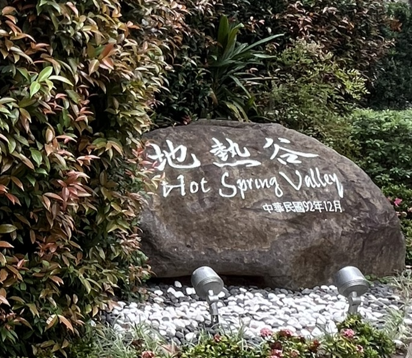

北投地熱谷：大自然的神秘煙霧
地熱谷位在北投溫泉公園旁邊，是北投溫泉的源頭之一。這裡的溫泉水質屬於「青磺泉」，含有微量的放射性元素「鐳」，全世界僅有北投與日本玉川溫泉擁有此類泉質，因此極為珍貴。
走在新建好的環湖步道上，可以看見湖面長年漫天迷濛的白煙，彷彿走進了人間仙境或是地獄般的奇幻世界，也因此這裡曾被稱為「地獄谷」。



地熱谷位在北投溫泉公園旁邊，是北投溫泉的源頭之一。這裡的溫泉水質屬於「青磺泉」，含有微量的放射性元素「鐳」，全世界僅有北投與日本玉川溫泉擁有此類泉質，因此極為珍貴。
走在新建好的環湖步道上，可以看見湖面長年漫天迷濛的白煙，彷彿走進了人間仙境或是地獄般的奇幻世界，也因此這裡曾被稱為「地獄谷」。